Desarrollo de arquitectura multiplataforma
Unificación de interfaces Web, Móvil
y Escritorio
Ignacio Baca Moreno-Torres
Alberto Mateos Checa
Alberto Jimenez Ruiz
Enero 2012
Ignacio Baca Moreno-Torres
Alberto Mateos Checa
Alberto Jimenez Ruiz
Enero 2012
Aplicación de localización de surfistas
La aplicación debe tener los siguientes UI
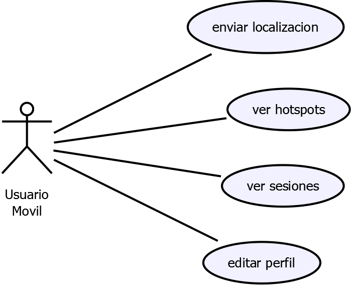
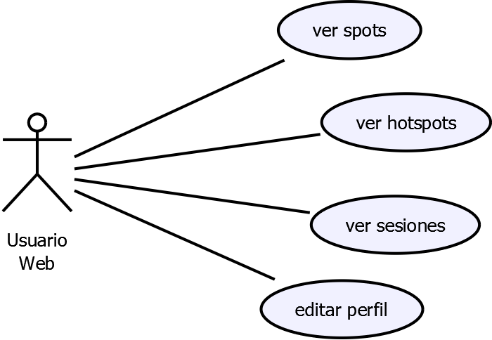
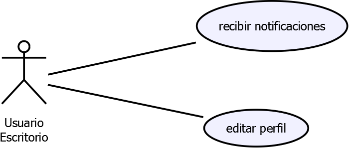

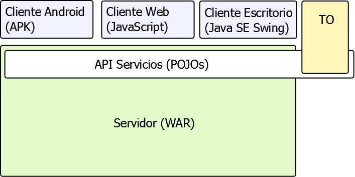
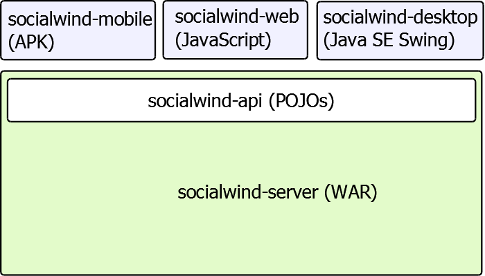
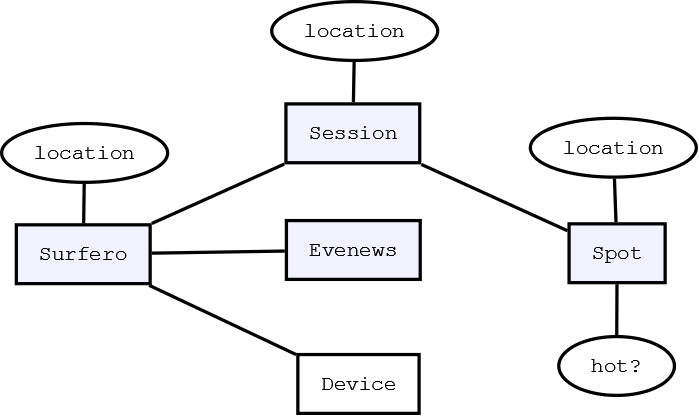
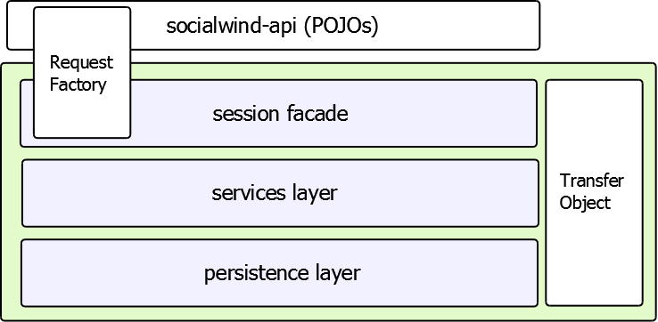
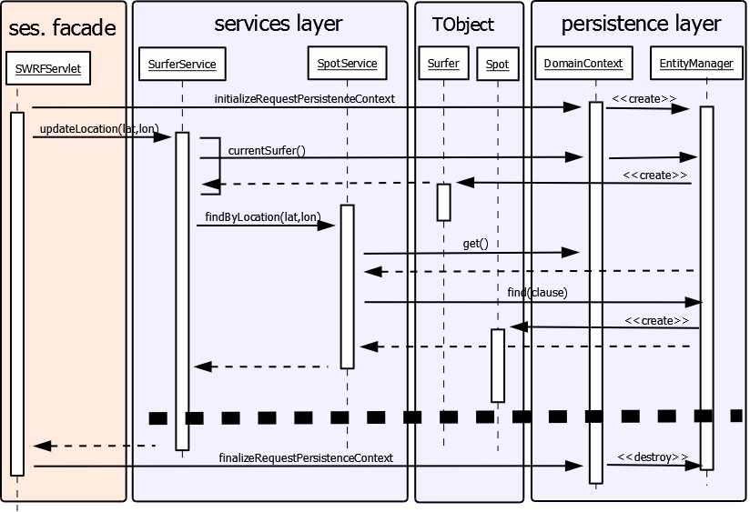
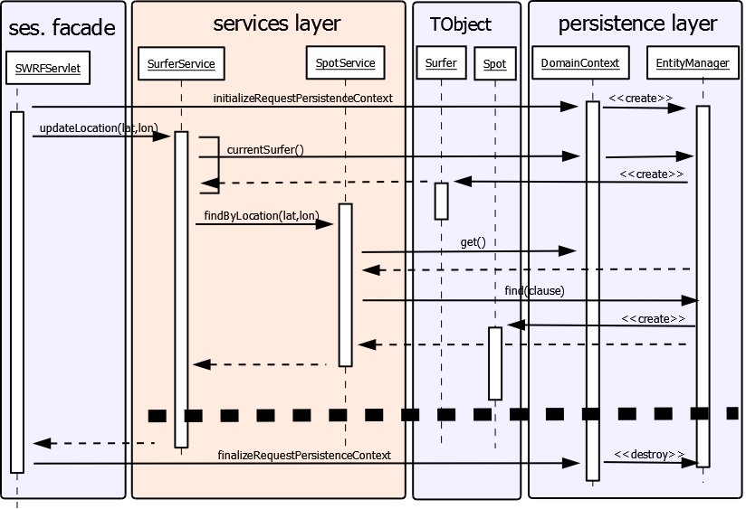
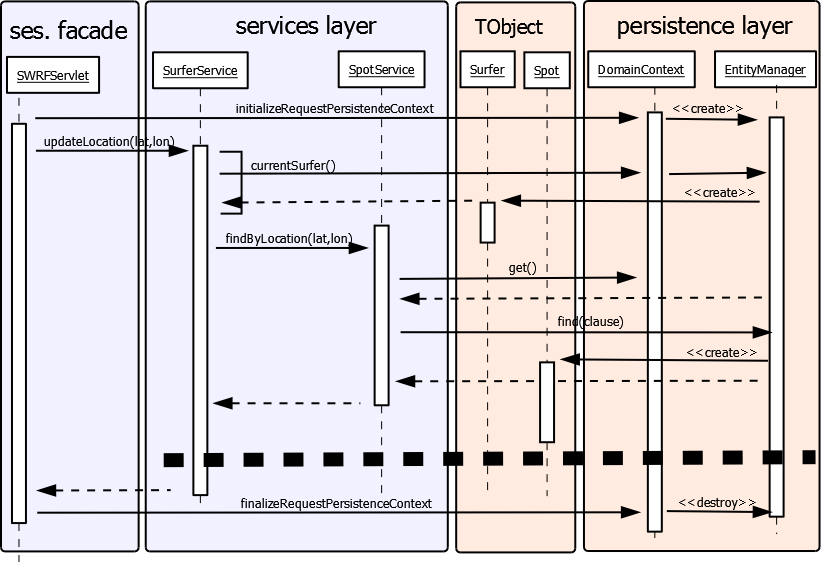
org.inftel.socialwind.server
org.inftel.socialwind.server.services
org.inftel.socialwind.server.domain
private static ThreadLocal<EntityManager> holder =
new ThreadLocal<EntityManager>() {
@Override
protected EntityManager initialValue() {
throw new IllegalStateException(DomainContext.class.getName()
+ " no esta inicializado");
}
};
org.inftel.socialwind.server.domain.DomainContext
@Test(expected = UserNotAuthenticatedException.class)
public final void testCurrentUserNotAuthenticated() {
helper.setEnvIsLoggedIn(false);
@SuppressWarnings("unused")
Surfer current = SurferService.currentSurfer();
}
...socialwind.server.services.SurferServiceTest (main/test)
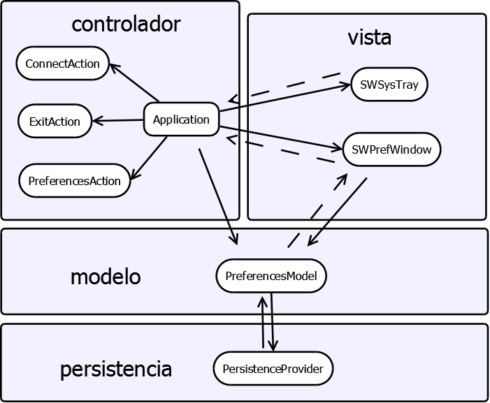
java.util.prefs.Preferences
Preferences preferences = Preferences.userNodeForPackage(ApplicationWindow.class);
userName = preferences.get("user_name", "");
password = preferences.get("password", "");
savePassword = preferences.getBoolean("save_password", false);
SurferRequest request = requestFactory.surferRequest(); surfer = request.edit(surfer); surfer.setDisplayName(getDisplayName()); surfer.setFullName(getFullName()); request.fire(new Receiver...
Dos threads, uno para comunicación y otro para mostrar
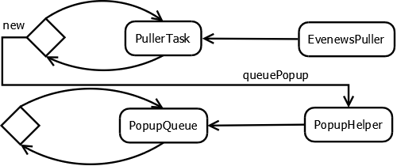
// Blocking queue para esperar recibir mensajes
private final BlockingQueue<String[]> queue = new ArrayBlockingQueue<String[]>(10);
// offer, por si hay demasiados que se descarten
queue.offer(new String[] { title, message });
// take para que quede bloqueado hasta que reciba algo
String[] data = queue.take();
Uso de 3 modelos: hotspots, sesiones y perfil.
public String getDisplayName() {
synchronized (this) {
return displayName;
}
}
public interface HotspotListener {
void onHotspotsUpdated(HotspotModel hotspotModel);
}
public void setHotspots(ArrayList<Spot> hotspots) {
synchronized (this) {
this.hotspots = hotspots;
}
// Se notifica a los listeners del cambio producido en el modelo
synchronized (listeners) {
for (HotspotListener listener : listeners) {
listener.onHotspotsUpdated(this);
}
}
}
public void onHotspotsUpdated(HotspotModel hotspotModel) {
adapter.updateList(hotspotModel.getHotspots());
adapter.notifyDataSetChanged();
}
public void setModel(HotspotModel model) {
if (model == null) {
throw new NullPointerException("HotspotModel");
}
HotspotModel oldModel = this.hotspots;
if (oldModel != null) {
oldModel.removeListener(this);
}
this.hotspots = model;
this.hotspots.addListener(this);
this.controller = new HotspotController(this.hotspots);
}


adapter = new HotspotArrayAdapter(activity, controller.getHotspots()); setListAdapter(adapter);
Objetivo: no congelar la UI
Uso de la clase AsyncTask
Guarda Instancias estáticas de objetos pesados:
public class ClientFactoryImpl implements ClientFactory {
/** Bus encargado de gestionar los distintos eventos de la aplicacion */
private static EventBus eventBus;
/** Vista encargada de mostrar el listados de playas */
private static PlayasListView playasListView;
/** Vista encargada de mostrar el perfil */
private static PerfilView perfilView;
/** Objeto necesario para realizar la comunicacion con el servidor */
private static SocialwindRequestFactory swrf;
/** Objeto necesario para realizar los cambios de actividad */
private static PlaceController placeController;
Se encarga de realizar el cambio entre actividades. Una actividad es un componente MVP.
@UiHandler("opIntro")
void showPanelIntroduccion(ClickEvent event) {
clientFactory.getPlaceController().goTo(new IntroduccionPlace());
}
public Activity getActivity(Place place) {
if (place instanceof PlayasListPlace)
return new PlayasListActivity((PlayasListPlace) place, clientFactory, false);
else if (place instanceof PerfilPlace)
return new PerfilActivity((PerfilPlace) place, clientFactory);
.....
}
Lleva a cabo la separación de responsabilidades.
public void onCargarListadoPlayas() {
SpotRequest sr = swrf.spotRequest();
sr.findAllSpots().with("location").fire(new Receiver>() {
public void onSuccess(List response) {
playasListView.addPlayas(response);
}
public void onFailure(ServerFailure error) {
System.out.println(error.getMessage());
}
});
}
Separación de Funcionalidad:
Estructura de un componente:
<!DOCTYPE ui:UiBinder SYSTEM "http://dl.google.com/gwt/DTD/xhtml.ent">
<ui:UiBinder xmlns:ui="urn:ui:com.google.gwt.uibinder"
xmlns:g="urn:import:com.google.gwt.user.client.ui">
<ui:style>
</ui:style>
<g:HTMLPanel>
<h2>Listado de Playas:</h2>
<g:FlowPanel ui:field="fpPlayas"></g:FlowPanel>
</g:HTMLPanel>
</ui:UiBinder>
Funcionalidad de un componente:
public class SesionListViewImpl extends Composite implements SesionListView {
private static SesionListImplUiBinder uiBinder = GWT.create(SesionListImplUiBinder.class);
interface SesionListImplUiBinder extends UiBinder {}
@UiField FlowPanel fpsesiones;
Con esta arquitectura internacionalizar textos es muy simple:
<ui:msg>Panel Principal del ejemplo</ui:msg>
<module> <inherits name='com.google.gwt.i18n.I18N'/> <extend-property name='locale' values='en_US, es'/> <set-property-fallback name='locale' value='es'/> </module>